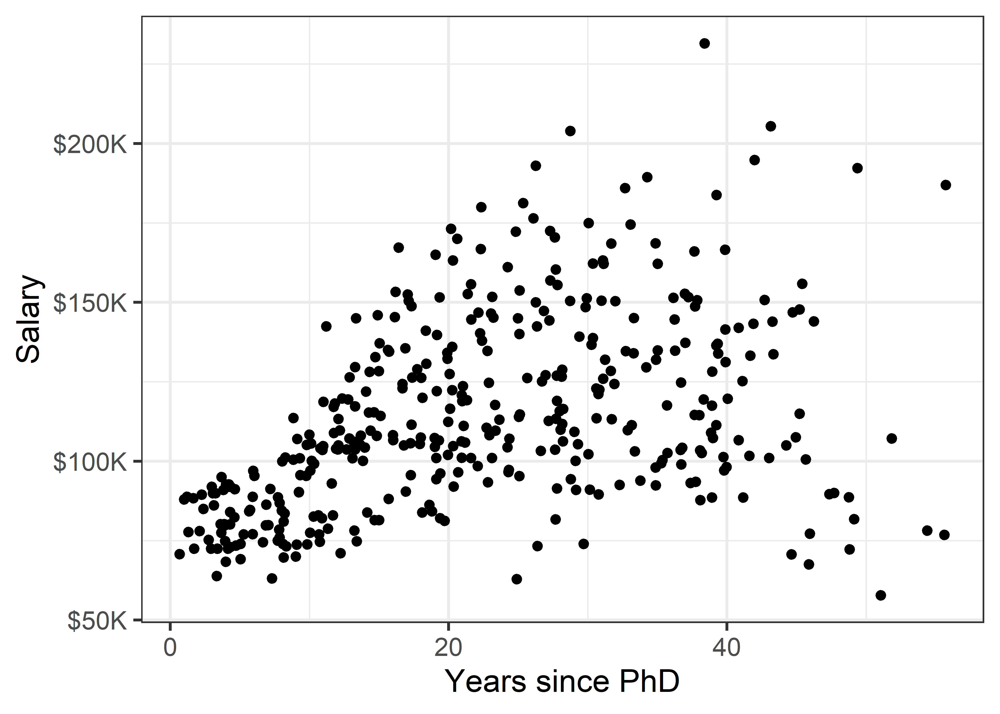
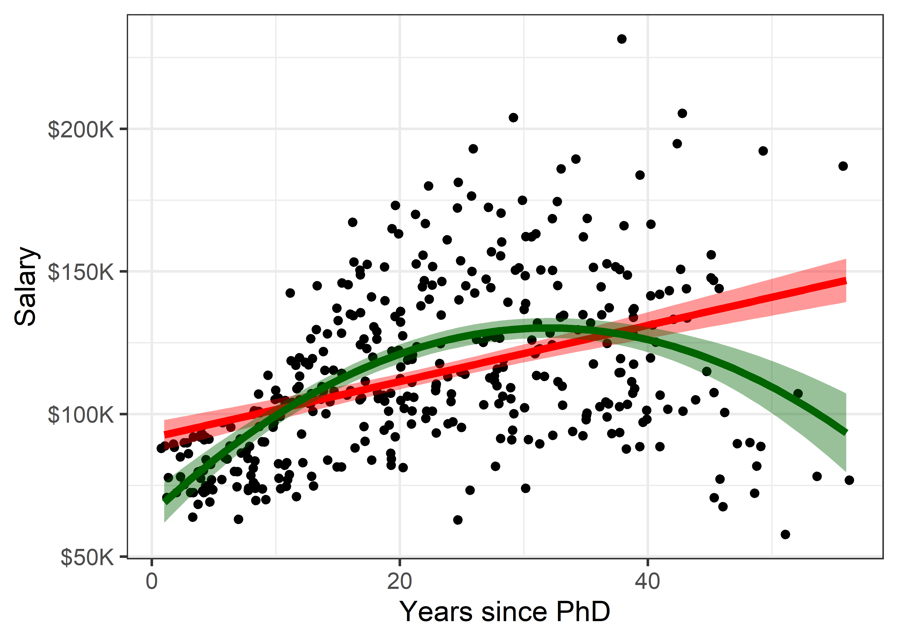
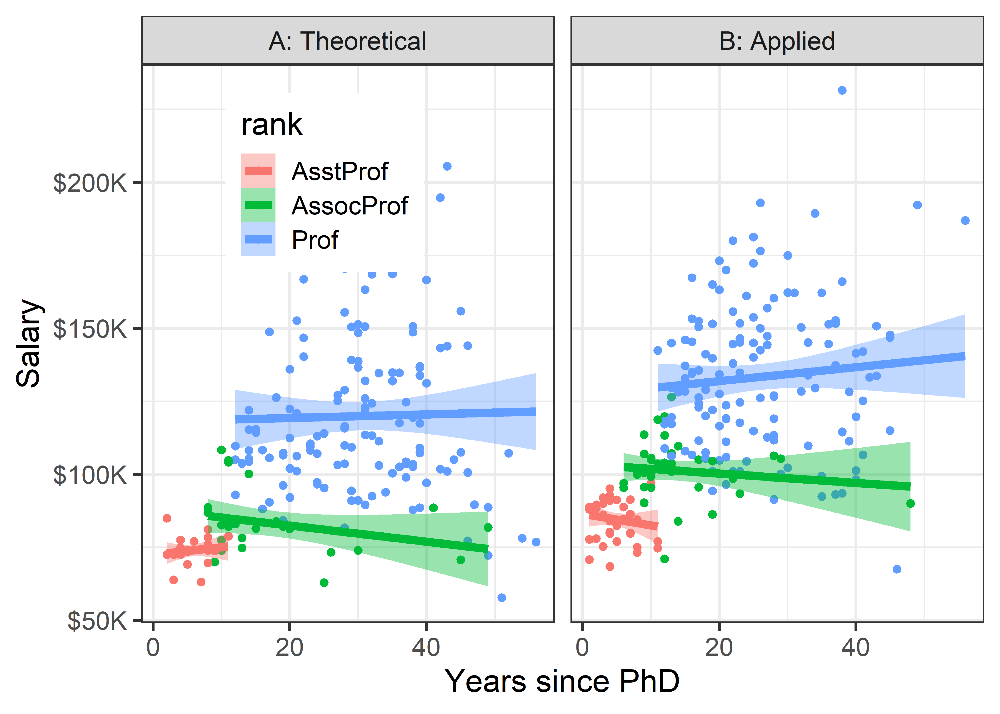
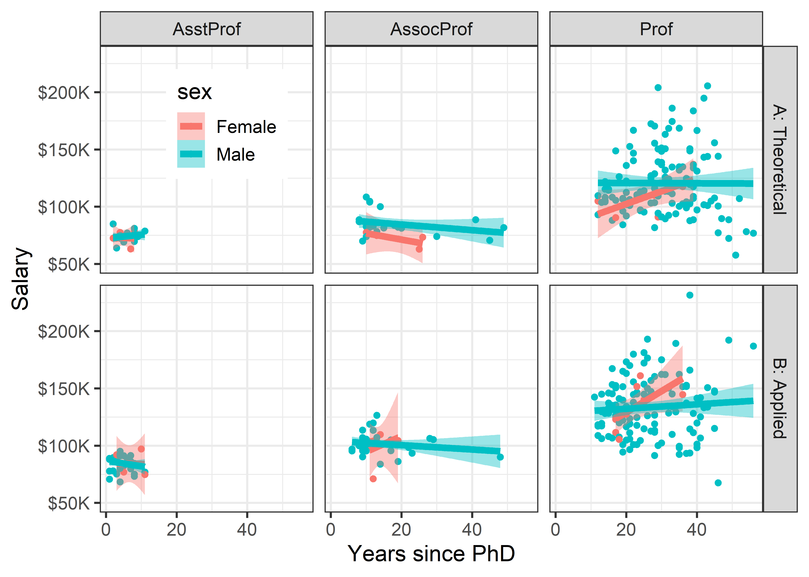
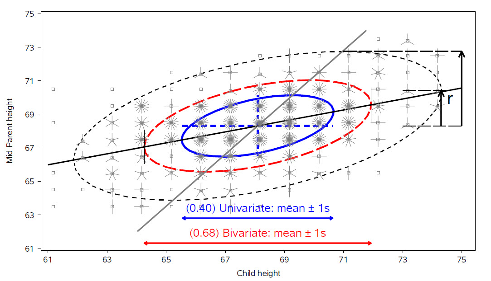
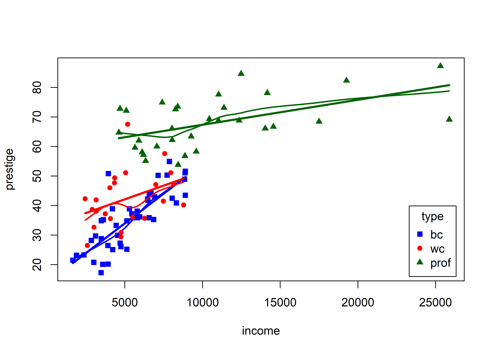
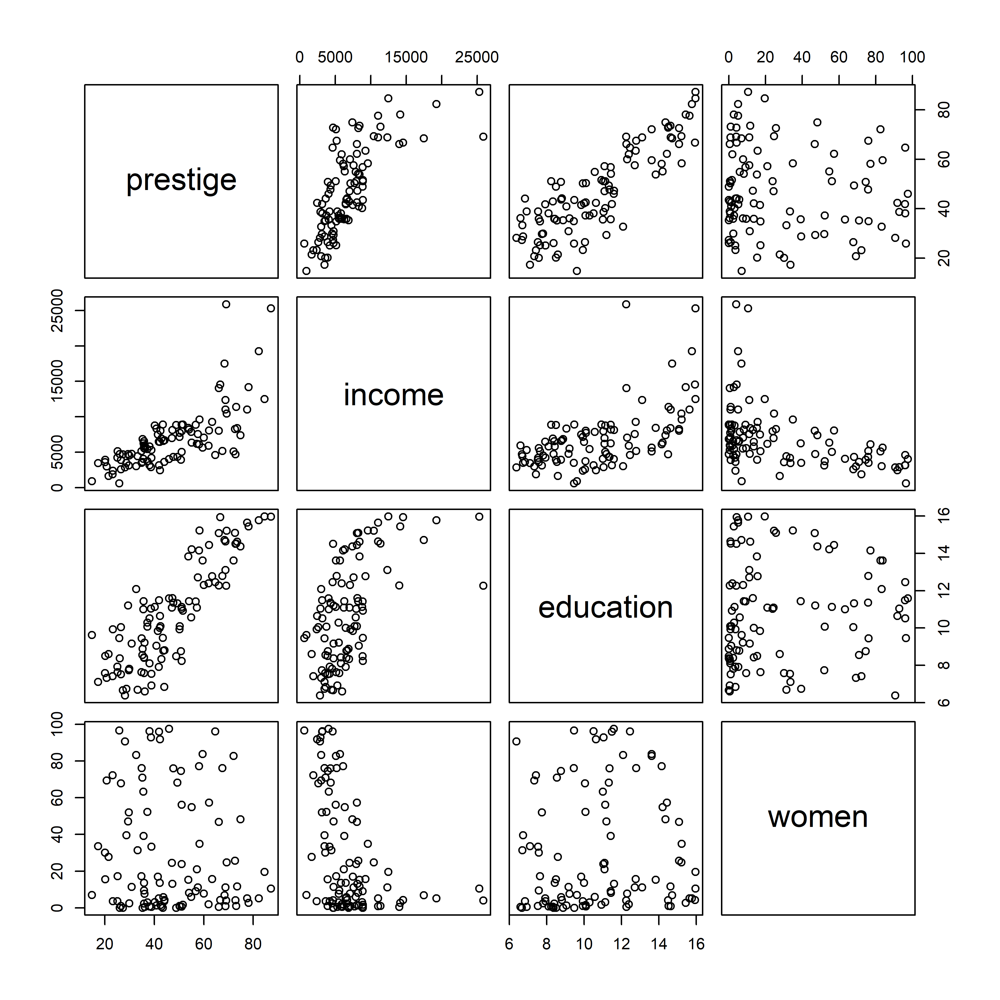
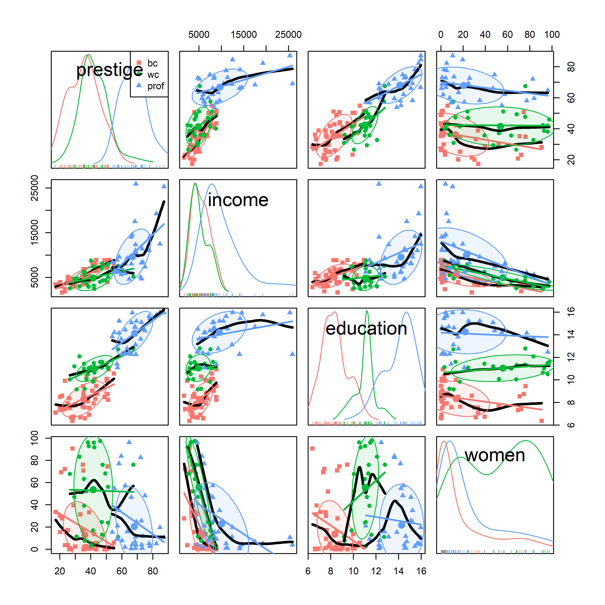

3 Plots of Multivariate Data
There is no excuse for failing to plot and look. — J. W.Tukey (1997), Exploratory Data Analysis, p. 157
The quote above from John Tukey reminds us that data analysis should rightly start with graphs to help us understand the main features of our data, to see patterns, trends and anomalies. This chapter introduces a toolbox of basic graphical methods for visualizing multivariate datasets. It starts with some simple techniques to enhance the basic scatterplot with annotations such as fitted lines, curves and data ellipses to summarize the relation between two variables.
To visualize more than two variables, we can view all pairs of variables in a scatterplot matrix or shift gears entirely to show multiple variables along a set of parallel axes. As the number of variables increase, we may need to suppress details with stronger summaries for a high-level reconnaissance of our data terrain, as we do by zooming out on a map.
Packages
In this chapter we use the following packages. Load them now:
3.1 Bivariate summaries
The basic scatterplot is the workhorse of multivariate data visualization, showing how one variable, \(y\), often an outcome to be explained by or varies with another, \(x\). It is a building block for many useful techniques, so it is helpful to understand how it can be used as a tool for thinking in a wider, multivariate context.
An essential idea is that we can start with a simple version and add plot annotations to show interesting features more clearly. We consider the following here:
- smoothers: showing overall trends, perhaps in several forms, as visual summaries;
- stratifiers: using color, shape or other features to identify subgroups; more generally, conditioning on other variables;
- data ellipses: a compact visual summary of linear relations and uncertainty.
Let’s start with data on the academic salaries of faculty members collected at a U.S. college for the purpose of assessing salary differences between male and female faculty members, and perhaps address anomalies in compensation. The dataset carData::Salaries gives data on nine-month salaries and other variables for 397 faculty members in the 2008-2009 academic year.
data(Salaries, package = "carData")
str(Salaries)
#> 'data.frame': 397 obs. of 6 variables:
#> $ rank : Factor w/ 3 levels "AsstProf","AssocProf",..: 3 3 1 3 3 2 3 3 3 3 ...
#> $ discipline : Factor w/ 2 levels "A","B": 2 2 2 2 2 2 2 2 2 2 ...
#> $ yrs.since.phd: int 19 20 4 45 40 6 30 45 21 18 ...
#> $ yrs.service : int 18 16 3 39 41 6 23 45 20 18 ...
#> $ sex : Factor w/ 2 levels "Female","Male": 2 2 2 2 2 2 2 2 2 1 ...
#> $ salary : int 139750 173200 79750 115000 141500 97000 175000 147765 119250 129000 ...The most obvious predictor of salary is years.since.phd; for simplicity, I’ll refer to this as years of “experience”. Before looking at differences between males and females, we would want consider faculty rank (related also to yrs.service) and discipline, recorded here as A (“theoretical” departments) or B (“applied” departments).
library(ggplot2)
gg1 <-ggplot(Salaries,
aes(x = yrs.since.phd, y = salary)) +
geom_jitter(size = 2) +
scale_y_continuous(labels = scales::dollar_format(
prefix="$", scale = 0.001, suffix = "K")) +
labs(x = "Years since PhD",
y = "Salary") +
theme_bw(base_size = 14)
gg1
There is quite a lot we can see “just by looking” at this simple plot, but the main things are:
- salary increases generally from 0 - 40 years since the PhD;
- variability in salary increases among those with the same experience, a “fan-shaped” pattern that signals a violation of homogeneity of variance in simple regression;
- data beyond 50 years is thin, but there are some quite low salaries there.
3.1.1 Smoothers
Smoothers are among the most useful graphical annotations you can add to such plots, giving a visual summary of how \(y\) changes with \(x\). The most common is to add a line showing the linear regression predictor for \(y\) given \(x\), expressed in math notation as \(\mathbb{E} (y | x) = b_0 + b_1 x\). If there is doubt that a linear relation is an adequate summary, you can try a quadratic or other polynomial smoother.
In ggplot2, these are easily added to a plot using geom_smooth() with method = "lm", and a model formula, which (by default) is y ~ x for a linear relation or y ~ poly(x, k) for a polynomial of degree \(k\).
Code
gg1 +
geom_smooth(method = "lm", formula = "y ~ x",
color = "red", fill= "red",
linewidth = 2) +
geom_smooth(method = "lm", formula = "y ~ poly(x,2)",
color = "darkgreen", fill = "darkgreen",
linewidth = 2) 
This serves to highlight some of our impressions from the basic scatterplot shown in Figure 3.1, making them more apparent. And that’s precisely the point: The regression smoother draws attention to a possible pattern that we can consider as a visual summary of the data. You can think of this as showing what a linear (or quadratic) regression “sees” in the data. Statistical tests (secref?) can help you decide if there is more evidence for a quadratic fit compared to the simpler linear relation.
It is useful to also show some indication of uncertainty (or inversely, precision) associated with with the predicted values. Both the linear and quadratic trends are shown in Figure 3.2 with 95% pointwise confidence bands. These are necessarily narrower in the center of the range of \(x\) where there is typically more data; they get wider toward the highest values of experience where the data are thin.
3.1.1.1 Non-parametric smoothers
The most generally useful idea is a smoother that tracks an average value, \(\mathbb{E} (y | x)\), of \(y\) as \(x\) varies across its’ range without assuming any particular functional form, and so avoiding the necessity to choose among y ~ poly(x, 1), or y ~ poly(x, 2), or y ~ poly(x, 3) …
Non-parametric smoothers attempt to estimate \(\mathbb{E} (y | x) = f(x)\) where \(f(x)\) is some smooth function. These typically use a collection of weighted local regressions for each \(x_i\) within a window centered at that value. In the method called lowess or loess (Cleveland 1979; Cleveland and Devlin 1988), a weight function is applied, giving greatest weight to \(x_i\) and weights of 0 outside a window containing a fraction \(s\) of the nearest neighbors of \(x_i\). The fraction, \(s\), usually within the range \(1/3 \le s \le 2/3\), called the span, determines the smoothness of the resulting curve; smaller values produce a wigglier curve and larger values giving a smoother fit. If desired, an optimal span can be determined by \(k\)-fold cross-validation to minimize a measure of overall error of approximation.
Non-parametric regression is broad topic; see Fox (2016), Ch. 18 for a more general treatment and Wood (2006) for generalized additive models, fit using method = "gam" in ggplot2, which is the default when the largest group has more than 1,000 observations.
Figure 3.3 shows the addition of a loess smooth to the plot in Figure 3.2, suppressing the confidence band for the linear regression. The loess fit is nearly coincident with the quadratic fit, but has a slightly wider confidence band.
Code
gg1 +
geom_smooth(method = "loess", formula = "y ~ x",
color = "blue", fill = scales::muted("blue"),
linewidth = 2) +
geom_smooth(method = "lm", formula = "y ~ x", se = FALSE,
color = "red",
linewidth = 2) +
geom_smooth(method = "lm", formula = "y ~ poly(x,2)",
color = "darkgreen", fill = "lightgreen",
linewidth = 2) But now comes an important question: Is it reasonable that academic salary should increase up to about 40 years since the PhD degree and then decline? The predicted salary for someone still working 50 years after earning their degree is about the same as a person at 15 years. What else is going on here?
3.1.2 Stratifiers
Very often, we have a main relationship of interest, but various groups in the data are identified by discrete factors (like faculty rank and sex, their type of discipline here), or there are quantitative predictors for which the main relation might vary. In the language of statistical models such effects are interaction terms, as in y ~ group + x + group:x, where the term group:x fits a different slope for each group and the grouping variable is often called a moderator variable. Common moderator variables are ethnicity, health status, social class and level of education. Moderators can also be continuous variables as in y ~ x1 + x2 + x1:x2.
I call these stratifiers, recognizing that we should consider breaking down the overall relation to see whether and how it changes over such “other” variables. Such variables are most often factors, but we can cut a continuous variable into ranges (shingles) and do the same graphically. There are two general stratifying graphical techniques:
grouping: Identify subgroups in the data by assigning different visual attributes, such as color, shape, line style, etc. within a single plot. This is quite natural for factors; quantitative predictors can be accommodated by cutting their range into ordered intervals. Two such grouping variables can be Grouping has the advantage that the levels of a grouping variable can be shown within the same plot, facilitating direct comparison.
conditioning: Showing subgroups in different plot panels. This has the advantages that relations for the individual groups more easily discerned and one can easily stratify by two (or more) other variables jointly, but visual comparison is more difficult because the eye must scan from one panel to another.
Recognition of the roles of visual grouping by factors within a panel and conditioning in multi-panel displays was an important advance in the development of modern statistical graphics. It began at A.T.&T. Bell Labs in Murray Hill, NJ in conjunction with the S language, the mother of R.
Conditioning displays (originally called coplots (Chambers and Hastie 1991)) are simply a collection of 1D, 2D or 3D plots separate panels for subsets of the data broken down by one or more factors, or, for quantitative variables, subdivided into a factor with several overlapping intervals (shingles). The first implementation was in Trellis plots Becker, Cleveland, and Shyu (1996); Cleveland:85.
Trellis displays were extended in the lattice package (Sarkar 2023), which offered:
- a graphing syntax similar to that used in statistical model formulas:
y ~ x | gconditions the data by the levels ofg, with|read as “given”; two or more conditioning are specified asy ~ x | g1 + g2 + ..., with+read as “and”. -
panel functions define what is plotted in a given panel.
panel.xyplot()is the default for scatterplots, plotting points, but you can addpanel.lmline()for regression lines,latticeExtra::panel.smoother()for loess smooths and a wide variety of others.
The most obvious variable that affects academic salary is rank, because faculty typically get an increase in salary with a promotion that carries through in their future salary. What can we see if we group by rank and fit a separate smoothed curve for each?
In ggplot2 thinking, grouping is accomplished simply by adding an aesthetic, such as color = rank. what happens then is that points, lines, smooths and other geom_*() inherit the feature that they are differentiated by color. In the case of geom_smooth(), we get a separate fit for each subset of the data, according to rank.
Code
# make some re-useable pieces to avoid repetitions
scale_salary <- scale_y_continuous(
labels = scales::dollar_format(prefix="$",
scale = 0.001,
suffix = "K"))
# position the legend inside the plot
legend_pos <- theme(legend.position = c(.1, 0.95),
legend.justification = c(0, 1))
ggplot(Salaries,
aes(x = yrs.since.phd, y = salary,
color = rank)) +
geom_point() +
scale_salary +
labs(x = "Years since PhD",
y = "Salary") +
geom_smooth(aes(fill = rank),
method = "loess", formula = "y ~ x",
linewidth = 2) +
# theme_bw(base_size = 14) +
legend_pos
Well, there is a different story here. Salaries generally occupy separate levels, increasing with academic rank. The horizontal extents of the smoothed curves show their ranges. Within each rank there is some initial increase after promotion, and then some tendency to decline with increasing years. But by and large, years since the PhD doesn’t make that much difference, once we’ve taken academic rank into account
What about the discipline, classified, perhaps peculiarly as “theoretical” vs. “applied”, here? The values are just "A" and "B", so I map these to more meaningful labels before making the plot.
Code
Salaries <- Salaries |>
mutate(discipline = factor(discipline,
labels = c("A: Theoretical", "B: Applied")))
Salaries |>
ggplot(aes(x = yrs.since.phd, y = salary, color = discipline)) +
geom_point() +
scale_salary +
geom_smooth(aes(fill = discipline ),
method = "loess", formula = "y ~ x",
linewidth = 2) +
labs(x = "Years since PhD",
y = "Salary") +
legend_pos The story in Figure 3.5 is again different. Faculty in applied disciplines on average earn about 10,000$ more per year on average than their theoretical colleagues.
For both groups, there is an approximately linear relation up to about 30–40 years, but the smoothed curves then diverge, into the region where the data is thin.
3.1.3 Conditioning
The previous plots use grouping by color to plot the data for different subsets inside the same plot window, making comparison among groups easier, because they can be directly compared along a common vertical scale 1. This gets messy however when there are more than just a few levels, or worse—when there are two (or more) variables for which we want to show separate effects. In such cases, we can plot separate panels using the ggplot2 concept of faceting. There are two options: facet_wrap() takes one or more conditioning variables and produces a ribbon of plots for each combination of levels; facet_grid(row ~ col) takes two or more conditioning variables and arranges the plots in a 2D array identified by the row and col variables.
Let’s look at salary broken down by the combinations of discipline and rank. Here, I chose to stratify using color by rank within each of panels faceting by discipline. Because there is more going on in this plot, a linear smooth is used to represent the trend.
Code
Salaries |>
ggplot(aes(x = yrs.since.phd, y = salary, color = rank)) +
geom_point() +
scale_salary +
labs(x = "Years since PhD",
y = "Salary") +
geom_smooth(aes(fill = rank),
method = "lm", formula = "y ~ x",
linewidth = 2) +
facet_wrap(~ discipline) +
# theme_bw(base_size = 14) +
legend_pos
Once both of these factors are taken into account, there does not seem to be much impact of years of service. Salaries in theoretical disciplines are noticeably greater than those in applied disciplines at all ranks, and there are even greater differences among ranks.
Finally, to shed light on the question that motivated this example— are there anomalous differences in salary for men and women— we can look at differences in salary according to sex, when discipline and rank are taken into account. To do this graphically, condition by both variables, but use facet_grid(discipline ~ rank) to arrange their combinations in a grid whose rows are the levels of discipline and whose columns are those of rank. I want to make the comparison of males and females most direct, so I use color = sex to stratify the panels. The smoothed regression lines and error bands are calculated separately for each combination of discipline, rank and sex.
Code
Salaries |>
ggplot(aes(x = yrs.since.phd, y = salary, color = sex)) +
geom_point() +
scale_salary +
labs(x = "Years since PhD",
y = "Salary") +
geom_smooth(aes(fill = sex),
method = "lm", formula = "y ~ x",
linewidth = 2) +
facet_grid(discipline ~ rank) +
theme_bw(base_size = 14) +
legend_pos
3.1.4 Data Ellipses
The data ellipse (Monette 1990), or concentration ellipse (Dempster 1969) is a remarkably simple and effective display for viewing and understanding bivariate relationships in multivariate data. The data ellipse is typically used to add a visual summary to a scatterplot, that shows all together the means, standard deviations, correlation, and slope of the regression line for two variables, perhaps stratified by another variable. Under the classical assumption that the data are bivariate normally distributed, the data ellipse is also a sufficient visual summary, in the sense that it captures all relevant features of the data. See Friendly, Monette, and Fox (2013) for a complete discussion of the role of ellipsoids in statistical data visualization.
It is based on the idea that in a bivariate normal distribution, the contours of equal probability form a series of concentric ellipses. If the variables were uncorrelated and had the same variances, these would be circles, and Euclidean distance would measure the distance of each observation from the mean. When the variables are correlated, a different measure, Mahalanobis distance is the proper measure of how far a point is from the mean, taking the correlation into account.
To illustrate, Figure 3.8 shows a scatterplot with labels for two points, “A” and “B”. Which is further from the mean, “X”? A contour of constant Euclidean distance, shown by the red dashed circle, ignores the apparent negative correlation, so point “A” is further. The blue ellipse for Mahalanobis distance takes the correlation into account, so point “B” has a greater distance from the mean.
Mathematically, Euclidean (squared) distance for \(p\) variables, \(j = 1, 2, \dots , p\), is just a generalization of the square of a univariate standardized (\(z\)) score, \(z^2 = [(y - \bar{y}) / s]^2\),
\[ D_E^2 (\mathbf{y}) = \sum_j^p z_j^2 = \mathbf{z}^T \mathbf{z} = (\mathbf{y} - \bar{\mathbf{y}})^T \operatorname{diag}(\mathbf{S})^{-1} (\mathbf{y} - \bar{\mathbf{y}}) \; , \] where \(\mathbf{S}\) is the sample variance-covariance matrix, \(\mathbf{S} = ({n-1})^{-1} \sum_{i=1}^n (\mathbf{y}_i - \bar{\mathbf{y}})^T (\mathbf{y}_i - \bar{\mathbf{y}})\).
Mahalanobis’ distance takes the correlations into account simply by using the covariances as well as the variances, \[ D_M^2 (\mathbf{y}) = (\mathbf{y} - \bar{\mathbf{y}})^T S^{-1} (\mathbf{y} - \bar{\mathbf{y}}) \; . \] For \(p\) variables, the data ellipsoid \(\mathcal{E}_c\) of size \(c\) is a \(p\)-dimensional ellipse, defined as the set of points \(\mathbf{y} = (y_1, y_2, \dots y_p)\) whose squared Mahalanobis distance, \(D_M^2 ( \mathbf{y} )\) is less than or equal to \(c^2\).
When \(\mathbf{y}\) is (at least approximately) bivariate normal, \(D_M^2(\mathbf{y})\) has a large-sample \(\chi^2_2\) distribution (\(\chi^2\) with 2 df), so taking \(c^2 = \chi^2_2 (0.68) = 2.28\) gives a “1 standard deviation bivariate ellipse,” an analog of the standard interval \(\bar{y} \pm 1 s\), while \(c^2 = \chi^2_2 (0.95) = 5.99 \approx 6\) gives a data ellipse of 95% coverage.
3.1.4.1 Properties
The essential ideas of correlation and regression and their relation to ellipses go back to Galton (1886). Galton’s goal was to to predict (or explain) how a heritable trait, \(Y\), (e.g., height) of children was related to that of their parents, \(X\). He made a semi-graphic table of the frequencies of 928 observations of the average height of father and mother versus the height of their child, shown in Figure 3.9. He then drew smoothed contour lines of equal frequencies and had the wonderful visual insight that these formed concentric shapes that were tolerably close to ellipses. He then calculated summaries, \(\text{Ave}(Y | X)\), and, for symmetry, \(\text{Ave}(X | Y)\), and plotted these as lines of means on his diagram. Lo and behold, he had a second visual insight: the lines of means of (\(Y | X\)) and (\(X | Y\)) corresponded approximately to the loci of horizontal and vertical tangents to the concentric ellipses. To complete the picture, he added lines showing the major and minor axes of the family of ellipses (which turned out to be the principal components) with the result shown in Figure 3.9.

For two variables, \(x\) and \(y\), the remarkable properties of the data ellipse are illustrated in Figure 3.10, a modern reconstruction of Galton’s diagram.

The ellipses have the mean vector \((\bar{x}, \bar{y})\) as their center.
The lengths of arms of the central cross show the standard deviations of the variables, which correspond to the shadows of the ellipse covering 40% of the data. These are the bivariate analogs of the standard intervals \(\bar{x} \pm 1 s_x\) and \(\bar{y} \pm 1 s_y\).
More generally, shadows (projections) on the coordinate axes, or any linear combination of them, give any standard interval, \(\bar{x} \pm k s_x\) and \(\bar{y} \pm k s_y\). Those with \(k=1, 1.5, 2.45\), have bivariate coverage 40%, 68% and 95% respectively, corresponding to these quantiles of the \(\chi^2\) distribution with 2 degrees of freedom, i.e., \(\chi^2_2 (.40) \approx 1^2\), \(\chi^2_2 (.68) \approx 1.5^2\), and \(\chi^2_2 (.95) \approx 2.45\). The shadows of the 68% ellipse are the bivariate analog of a univariate \(\bar{x} \pm 1 s_x\) interval.
The regression line predicting \(y\) from \(x\) goes through the points where the ellipses have vertical tangents. The other regression line, predicting \(x\) from \(y\) goes through the points of horizontal tangency.
The correlation \(r(x, y)\) is the ratio of the vertical segment from the mean of \(y\) to the regression line to the vertical segment going to the top of the ellipse as shown at the right of the figure. It is \(r = 0.46\) in this example.
The residual standard deviation, \(s_e = \sqrt{MSE} = \sqrt{\Sigma (y - \bar{y})^2 / n-2}\), is the half-length of the ellipse at the mean \(\bar{x}\)
Because Galton’s values of parent and child height were recorded in class intervals of 1 in., they are shown as sunflower symbols in Figure 3.10, with multiple ‘petals’ reflecting the number of observations at each location. This plot (except for annotations) is constructed using sunflowerplot() and car::dataEllipse() for the ellipses.
data(Galton, package = "HistData")
sunflowerplot(parent ~ child, data=Galton,
xlim=c(61,75),
ylim=c(61,75),
seg.col="black",
xlab="Child height",
ylab="Mid Parent height")
y.x <- lm(parent ~ child, data=Galton) # regression of y on x
abline(y.x, lwd=2)
x.y <- lm(child ~ parent, data=Galton) # regression of x on y
cc <- coef(x.y)
abline(-cc[1]/cc[2], 1/cc[2], lwd=2, col="gray")
with(Galton,
car::dataEllipse(child, parent,
plot.points=FALSE,
levels=c(0.40, 0.68, 0.95),
lty=1:3)
)3.1.4.2 R functions for data ellipses
A number of packages provide functions for drawing data ellipses in a scatterplot, with various features.
-
car::scatterplot(): uses base R graphics to draw 2D scatterplots, with a wide variety of plot enhancements including linear and non-parametric smoothers (loess, gam), a formula method, e.g.,y ~ x | group, and marking points and lines using symbol shape, color, etc. Importantly, the car package generally allows automatic identification of “noteworthy” points by their labels in the plot using a variety of methods. For example,method = "mahal"labels cases with the most extreme Mahalanobis distances;method = "r"selects points according to their value ofabs(y), which is appropriate in residual plots. -
car::dataEllipse(): plots classical or robust data (usingMASS::cov/trob()) ellipses for one or more groups, with the same facilities for point identification. -
heplots::covEllipses(): draws classical or robust data ellipses for one or more groups in a one-way design and optionally for the pooled total sample, where the focus is on homogeneity of within-group covariance matrices. -
ggplot2::stat_ellipse(): uses the calculation methods ofcar::dataEllipse()to add unfilled (geom = "path") or filled (geom = polygon") data ellipses in aggplotscatterplot, using inherited aesthetics.
3.1.4.3 Example: Canadian occupational prestige
These examples use the data on the prestige of 102 occupational categories and other measures from the 1971 Canadian Census, recorded in carData::Prestige. Our interest is in understanding how prestige (the Pineo-Porter (Pineo and Porter 2008) prestige score for an occupational category, derived from a social survey) is related to census measures of the average education, income, percent women of incumbents in those occupations. Occupation type is a factor with levels "bc" (blue collar), "wc" (white collar) and "prof" (professional).
data(Prestige, package="carData")
# `type` is really an ordered factor. Make it so.
Prestige$type <- ordered(Prestige$type,
levels=c("bc", "wc", "prof"))
str(Prestige)
#> 'data.frame': 102 obs. of 6 variables:
#> $ education: num 13.1 12.3 12.8 11.4 14.6 ...
#> $ income : int 12351 25879 9271 8865 8403 11030 8258 14163 11377 11023 ...
#> $ women : num 11.16 4.02 15.7 9.11 11.68 ...
#> $ prestige : num 68.8 69.1 63.4 56.8 73.5 77.6 72.6 78.1 73.1 68.8 ...
#> $ census : int 1113 1130 1171 1175 2111 2113 2133 2141 2143 2153 ...
#> $ type : Ord.factor w/ 3 levels "bc"<"wc"<"prof": 3 3 3 3 3 3 3 3 3 3 ...I first illustrate the relation between income and prestige using car::scatterplot() with many of its bells and whistles, including marginal boxplots for the variables, the linear regression line, loess smooth and the 68% data ellipse.
scatterplot(prestige ~ income, data=Prestige,
pch = 16, cex.lab = 1.25,
regLine = list(col = "red", lwd=3),
smooth = list(smoother=loessLine,
lty.smooth = 1, lwd.smooth=3,
col.smooth = "darkgreen", col.var = "darkgreen"),
ellipse = list(levels = 0.68),
id = list(n=4, method = "mahal", col="black", cex=1.2))
#> general.managers lawyers ministers physicians
#> 2 17 20 24There is a lot that can be seen here:
-
incomeis positively skewed, as is often the case - the loess smooth, on the scale of income, shows
prestigeincreasing up to $15,000 (these are 1971 incomes), and then leveling off. - the data ellipse, centered at the means encloses approximately 68% of the data points. It adds visual information about the correlation and precision of the linear regression; but here, the non-linear trend for higher incomes strongly suggests a different approach.
- the four points identified by their labels are those with the largest Mahalanobis distances.
scatterplot()prints their labels to the console.
Figure 3.12 shows a similar plot for education, which from the boxplot appears to be reasonably symmetric. The smoothed curve is quite close to the linear regression, according to which prestige increases on average coef(lm(prestige ~ education, data=Prestige))[2] = 5.361 with each year of education.
scatterplot(prestige ~ education, data=Prestige,
pch = 16, cex.lab = 1.25,
regLine = list(col = "red", lwd=3),
smooth = list(smoother=loessLine,
lty.smooth = 1, lwd.smooth=3,
col.smooth = "darkgreen", col.var = "darkgreen"),
ellipse = list(levels = 0.68),
id = list(n=4, method = "mahal", col="black", cex=1.2))
#> physicians file.clerks newsboys farmers
#> 24 41 53 67
In this plot, farmers, newsboys, file.clerks and physicians are identified as noteworthy, for being furthest from the mean by Mahalanobis distance. In relation to their typical level of education, these are mostly understandable, but it is nice that farmers are rated of higher prestige than their level of education would predict.
Note that the method argument for point identification can take a vector of case numbers indicating the points to be labeled. So, to label the observations with large absolute standardized residuals in the linear model m, you can use method = which(abs(rstandard(m)) > 2).
par(mar = c(4,4,1,1)+.1)
m <- lm(prestige ~ education, data=Prestige)
scatterplot(prestige ~ education, data=Prestige,
pch = 16, cex.lab = 1.25,
boxplots = FALSE,
regLine = list(col = "red", lwd=3),
smooth = list(smoother=loessLine,
lty.smooth = 1, col.smooth = "black", lwd.smooth=3,
col.var = "darkgreen"),
ellipse = list(levels = 0.68),
id = list(n=4, method = which(abs(rstandard(m))>2), col="black", cex=1.2))
#> file.clerks collectors
#> 41 46
#> newsboys service.station.attendant
#> 53 54
#> farmers
#> 673.1.4.4 Plotting on a log scale
A typical remedy for the non-linear relationship of income to prestige is to plot income on a log scale. This usually makes sense, and expresses a belief that a multiple of or percentage increase in income has a constant impact on prestige, as opposed to the additive interpretation for income itself.
For example, the slope of the linear regression line in Figure 3.11 is given by coef(lm(prestige ~ income, data=Prestige))[2] = 0.003. Multiplying this by 1000 says that a $1000 increase in income is associated with with an average increase of prestige of 2.9.
In the plot below, scatterplot(..., log = "x") re-scales the x-axis to the \(\log_e()\) scale. The slope, coef(lm(prestige ~ log(income), data=Prestige))[2] = 21.556 says that a 1% increase in salary is associated with an average change of 21.55 / 100 in prestige.
scatterplot(prestige ~ income, data=Prestige,
log = "x",
pch = 16, cex.lab = 1.25,
regLine = list(col = "red", lwd=3),
smooth = list(smoother=loessLine,
lty.smooth = 1, lwd.smooth=3,
col.smooth = "darkgreen", col.var = "darkgreen"),
ellipse = list(levels = 0.68),
id = list(n=4, method = "mahal", col="black", cex=1.2))
#> general.managers ministers newsboys babysitters
#> 2 20 53 63The smoothed curve in Figure 3.14 exhibits a slight tendency to bend upwards, but a linear relation is a reasonable approximation.
3.1.4.5 Stratifying
Before going further, it is instructive to ask what we could see in the relationship between income and prestige if we stratified by type of occupation, fitting separate regressions and smooths for blue collar, white collar and professional incumbents in these occupations.
The formula prestige ~ income | type is a natural way to specify grouping by type; separate linear regressions and smooths are calculated for each group, applying the color and point shapes specified by the col and pch arguments.
scatterplot(prestige ~ income | type, data=Prestige,
col = c("blue", "red", "darkgreen"),
pch = 15:17,
grid = FALSE,
legend = list(coords="bottomright"),
regLine = list(lwd=3),
smooth=list(smoother=loessLine,
var=FALSE, lwd.smooth=2, lty.smooth=1))
This visual analysis offers a different interpretation of the dependence of prestige on income, which appeared to be non-linear when occupation type was ignored. Instead, Figure 3.15 suggests an interaction of income by type. In a model formula this would be expressed as one of:
lm(prestige ~ income + type + income:type, data = Prestige)
lm(prestige ~ income * type, data = Prestige)These models signify that there are different slopes (and intercepts) for the three occupational types. In this interpretation, type is a moderator variable, with a different story. The slopes of the fitted lines suggest that among blue collar workers, prestige increases sharply with their income. For white collar and professional workers, there is still an increasing relation of prestige with income, but the effect of income (slope) diminishes with higher occupational category. A different plot entails a different story.
3.1.4.6 Example: Penguins data

The penguins dataset from the palmerpenguins package (Horst, Hill, and Gorman 2022) provides further instructive examples of plots and analyses of multivariate data. The data consists of measurements of body size (flipper length, body mass, bill length and depth) of 344 penguins collected at the Palmer Research Station in Antartica. There were three different species of penguins (Adélie, Chinstrap & Gentoo) collected from 3 islands in the Palmer Archipelago between 2007–2009 (Gorman, Williams, and Fraser 2014). The purpose was to examine differences in size or appearance of these species, particularly differences among the sexes (sexual dimorphism) in relation to foraging and habitat.
Here I use a slightly altered version of the dataset, peng, renaming variables to remove the units, making factors of character variables and deleting a few cases with missing data.
data(penguins, package = "palmerpenguins")
peng <- penguins |>
rename(
bill_length = bill_length_mm,
bill_depth = bill_depth_mm,
flipper_length = flipper_length_mm,
body_mass = body_mass_g
) |>
mutate(species = as.factor(species),
island = as.factor(island),
sex = as.factor(substr(sex,1,1))) |>
tidyr::drop_na()
str(peng)
#> tibble [333 × 8] (S3: tbl_df/tbl/data.frame)
#> $ species : Factor w/ 3 levels "Adelie","Chinstrap",..: 1 1 1 1 1 1 1 1 1 1 ...
#> $ island : Factor w/ 3 levels "Biscoe","Dream",..: 3 3 3 3 3 3 3 3 3 3 ...
#> $ bill_length : num [1:333] 39.1 39.5 40.3 36.7 39.3 38.9 39.2 41.1 38.6 34.6 ...
#> $ bill_depth : num [1:333] 18.7 17.4 18 19.3 20.6 17.8 19.6 17.6 21.2 21.1 ...
#> $ flipper_length: int [1:333] 181 186 195 193 190 181 195 182 191 198 ...
#> $ body_mass : int [1:333] 3750 3800 3250 3450 3650 3625 4675 3200 3800 4400 ...
#> $ sex : Factor w/ 2 levels "f","m": 2 1 1 1 2 1 2 1 2 2 ...
#> $ year : int [1:333] 2007 2007 2007 2007 2007 2007 2007 2007 2007 2007 ...There are quite a few variables to choose for illustrating data ellipses in scatterplots. Here I focus on the measures of their bills, bill_length and bill_depth (indicating curvature) and show how to use ggplot2 for these plots.
An initial plot using ggplot2 shown in Figure 3.17 uses color and point shape to distinguish the three penguin species. I annotate the plot of points using the linear regression lines, loess smooths to check for non-linearity and 95% data ellipses to show precision of the linear relation.
Code
ggplot(peng,
aes(x = bill_length, y = bill_depth,
color = species, shape = species, fill=species)) +
geom_point(size=2) +
geom_smooth(method = "lm", formula = y ~ x,
se=FALSE, linewidth=2) +
geom_smooth(method = "loess", formula = y ~ x,
linewidth = 1.5, se = FALSE, alpha=0.1) +
stat_ellipse(geom = "polygon", level = 0.95, alpha = 0.2) +
theme(legend.position = c(0.85, 0.15))Overall, the three species occupy different regions of this 2D space and for each species the relation between bill length and depth appears reasonably linear. Given this, we can suppress plotting the data points to get a visual summary of the data using the fitted regression lines and data ellipses, as shown in Figure 3.18.
This idea, of visual thinning a graph to focus on what should be seen, becomes increasingly useful as the data becomes more complex. The ggplot2 framework encourages this, because we can think of various components as layers, to be included or not. Here I chose to include only the regression line and add data ellipses of 40%, 68% and 95% coverage to highlight the increasing bivariate density around the group means.
Code
ggplot(peng,
aes(x = bill_length, y = bill_depth,
color = species, shape = species, fill=species)) +
geom_smooth(method = "lm", se=FALSE, linewidth=2) +
stat_ellipse(geom = "polygon", level = 0.95, alpha = 0.2) +
stat_ellipse(geom = "polygon", level = 0.68, alpha = 0.2) +
stat_ellipse(geom = "polygon", level = 0.40, alpha = 0.2) +
theme(legend.position = c(0.85, 0.15))
While I emphasize data ellipses (because I like their beautiful geometry), other visual summaries of the bivariate density are possible and often useful.
For a single variable, stats::density() and ggplot2::geom_density() calculate a smoothed estimate of the density using nonparametric kernel methods (Silverman 1986) whose smoothness is controlled by a bandwidth parameter, analogous to the span in a loess smoother. This idea extends to two (and more) variables (Scott 1992). For bivariate data, MASS::kde2d() estimates the density on a square \(n \times n\) grid over the ranges of the variables.
ggplot2 provides geom_density_2d() which uses MASS::kde2d() and displays these as contours— horizontal slices of the 3D surface at equally-spaced heights and projects these onto the 2D plane. The ggdensity package (Otto and Kahle 2023) extends this with geom_hdr(), computing the high density regions that bound given levels of probability and maps these to the alpha transparency aesthetic. A method argument allows you to specify various nonparametric (method ="kde" is the default) and parametric (method ="mvnorm" gives normal data ellipses) ways to estimate the underlying bivariate distribution.
Figure 3.19 shows these side-by-side for comparison. With geom_density_2d() you can specify either the number of contour bins or the width of these bins (binwidth). For geom_hdr(), the probs argument gives a result that is easier to understand.
Code
library(ggdensity)
library(patchwork)
p1 <- ggplot(peng,
aes(x = bill_length, y = bill_depth,
color = species)) +
geom_smooth(method = "lm", se=FALSE, linewidth=2) +
geom_density_2d(linewidth = 1.2, bins = 8) +
ggtitle("geom_density_2d") +
theme_bw(base_size = 14) +
theme(legend.position = c(0.85, 0.15))
p2 <- ggplot(peng,
aes(x = bill_length, y = bill_depth,
color = species, fill = species)) +
geom_smooth(method = "lm", se=FALSE, linewidth=2) +
geom_hdr(probs = c(0.95, 0.68, 0.4), show.legend = FALSE) +
ggtitle("ggdensity::geom_hdr") +
theme_bw(base_size = 14) +
theme(legend.position = c(0.85, 0.15))
p1 + p23.2 Scatterplot matrices
Going beyond bivariate scatterplots, a pairs plot (or scatterplot matrix) displays all possible \(p \times p\) pairs of \(p\) variables in a matrix-like display where variables \((x_i, x_j)\) are shown in a plot for row \(i\), column \(j\). This idea, due to Hartigan (1975), uses small multiple plots, so that the eye can easily scan across a row or down a column to see how a given variable is related to all the others.
The most basic version is provided by pairs() in base R. When one variable is considered as an outcome or response, it is usually helpful to put this in the first row and column. For the Prestige data, in addition to income and education, we also have a measure of % women in each occupational category. Plotting these together gives Figure 3.20.
pairs(~ prestige + income + education + women,
data=Prestige)
pairs()The plots in the first row show what we have seen before for the relations between prestige and income and education, adding to those the plot of prestige vs. % women. Plots in the first column show the same data, but with \(x\) and \(y\) interchanged.
A more feature-rich version is provided by car::scatterplotMatrix() which can add the regression lines, loess smooths and data ellipses for each pair. The diagonal panels show density curves for the distribution of each variable; for example, the distribution of education appears to be multi-modal and that of women shows that most of the occupations have a low percentage of women. The combination of the regression line with the loess smoothed curve, but without their confidence envelopes, provides about the right amount of detail to take in at a glance where the relations are non-linear.
scatterplotMatrix(~ prestige + income + education + women,
data=Prestige,
regLine = list(method=lm, lty=1, lwd=2, col="black"),
smooth=list(smoother=loessLine, spread=FALSE,
lty.smooth=1, lwd.smooth=3, col.smooth="red"),
ellipse=list(levels=0.68, fill.alpha=0.1))
car::scatterplotMatrix().scatterplotMatrix() can also label points using the id = argument (though this can get messy) and can stratify the observations by a grouping variable with different symbols and colors. For example Figure 3.22 uses the syntax ~ prestige + education + income + women | type to provide separate regression lines, smoothed curves and data ellipses for the three types of occupations. (The default colors are somewhat garish, so I use scales::hue_pal() to mimic the discrete color scale used in ggplot2).
scatterplotMatrix(~ prestige + income + education + women | type,
data = Prestige,
col = scales::hue_pal()(3),
pch = 15:17,
smooth=list(smoother=loessLine, spread=FALSE,
lty.smooth=1, lwd.smooth=3, col.smooth="black"),
ellipse=list(levels=0.68, fill.alpha=0.1))
car::scatterplotMatrix(), stratified by type of occupation.It is now easy to see why education is multi-modal: blue collar, white collar and professional occupations have largely non-overlapping years of education. As well, the distribution of % women is much higher in the white collar category.
3.2.1 Generalized pairs plots
When a dataset contains one or more discrete variables, the traditional pairs plot provides cannot cope, using only color and/or point symbols to represent categorical variables. In the context of mosaic displays and loglinear models, representing \(n\)-way frequency tables by rectangular tiles depicting cell frequencies, I (Friendly 1994) proposed an analog of the scatterplot matrix using mosaic plots for each pair of variables. The vcd package (Meyer, Zeileis, and Hornik 2023) implements very general pairs() methods for "table" objects. See my book Discrete Data Analysis with R (Friendly and Meyer 2016) …
The next step, by John Emerson and others (Emerson et al. 2013) was to recognize that combinations of continuous and discrete, categorical variables could be plotted in different ways.
- two continuous variables can be shown as a standard scatterplot of points and/or bivariate density contours, or simply by numeric summaries such as a correlation value;
- a pair of one continuous and one categorical variable can be shown as side-by-side boxplots or violin plots, histograms or density plots
- two categorical variables could be shown in a mosaic plot or by grouped bar plots.
In the ggplot2 framework, these displays are implemented in the GGally package (Schloerke et al. 2021) …
3.3 Parallel coordinate plots
#> 16 packages used here:
#> base, car, carData, corrgram, datasets, dplyr, GGally, ggdensity, ggplot2, graphics, grDevices, methods, patchwork, stats, tidyr, utils